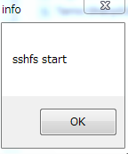
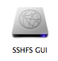
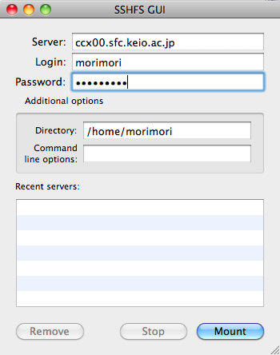
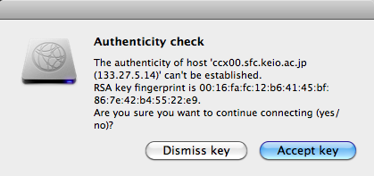
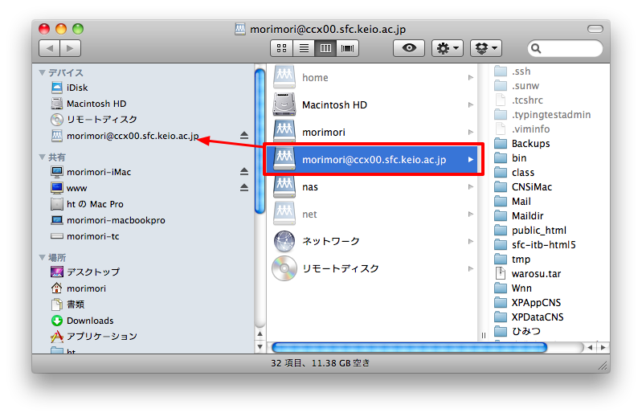

自分のPCからCNSのホームディレクトリを更新する
ここでは自分の私物PC（Windows/Mac）からCNSのホームディレクトリにアクセスする方法を紹介する． これにより，特別教室まで来なくてもインターネット接続環境さえあればサイトを更新できるようになる．
SSHFSを使う際の注意点
SSHFSを使うとあたかも自分のPCに繋がっているHDDの様にファイルにアクセスできるが，それは仮想的に繋がっているだけ であることを忘れてはいけない． 例えば， SSHFS上にあるファイルを編集中にネットワークが切れたり，PCをスリープさせて別の場所で復帰させたりすると， 編集していたファイルの変更情報は失われ，最悪ファイルが破損する恐れがある． SSHFSは便利ではあるが，このような弱点もあるのでこまめな保存を心がけて使う様にすること．
Windows
WindowsでCNSのファイルにアクセスする方法にはWinSCPによるSCP接続とDokan SSHFSによるSSHマウントの二通りがある．
WinSCPによるSCP接続
WinSCPによるファイル転送の方法はITCの提供するページが詳しいので，そちらを参照のこと．
WinSCPによるファイル転送では，WinSCPという専用のファイル転送ソフトを使い，CNS上のホームディレクトリにアクセスする． 通常の利用ではこの方式で問題ないが，HTMLの編集のように頻繁に変更があり，その都度確認をしたい場合に
- 自分のPCのテキストエディタでHTMLファイル編集
- 編集したHTMLファイルをローカル（自分のPCの中）に保存
- WinSCPを起動し，所定の場所にファイルをアップロード
- ブラウザで確認し，問題があれば１に戻る
という煩雑な手順を踏む必要がある．特にテキストエディタでのファイル保存の後にWinSCPでファイル転送するのを忘れてしまい， 更新したと思ってもCNS上のファイルが更新されていないという自体になりやすい． そこで，本授業ではDokan SSHFSによるSSHマウントを推奨する．
Dokan SSHFSによるSSHマウント
Dokan SSHFS は，Windowsの機能を拡張し， あたかも自分のPC上のHDD（ハードディスク）であるかのようにCNSのホームディレクトリを利用する（マウントする）ことが出来る ネットワークドライブと同じ機能を有するソフトウェアである． これにより，WinSCPではローカルへのファイル保存の後に逐一ファイル転送を行う必要があったのが，直接CNS上のファイルを編集する ことが出来るようになる． また，外付けHDDと同じ様に見えるので，使い慣れたエクスプローラを使ってアクセスすることが出来る．
Dokan SSHFSをインストールするには， Dokanのダウンロードページから Dokanライブラリ（本資料作成時点で0.6.0）と Dokan SSHFS（本資料作成時点で0.6.0）を ダウンロードしてインストールする必要がある．
必ずDokanライブラリから先にインストールを行う．ダウンロードしたファイルをダブルクリックし， 指示に従ってインストールすれば良い．

次に，Dokan SSHFSをインストールするが，最新のDokan SSHFSにはインストーラが付属していないので， どこか忘れないフォルダに適当に解凍する． 解凍したフォルダの中にあるDokanSSHFSをダブルクリックすると， 以下のウィンドウが現れるので，自分のCNSアカウントに沿って設定する

設定内容
- Host: ccx00.sfc.keio.ac.jp （全員共通）
- User: 自分のCNSアカウント名
- Password: CNSのログインパスワード
- Server Root: /home/自分のCNSアカウント名
- Drive: N（もしNドライブを既に使っていれば使っていないドライブレター）
全ての設定を完了したら「Connect」ボタンを押す．CNSとの接続に成功すれば，以下のダイアログが表示される （毎回上記の設定を入力するのは手間なので，ウィンドウの上の方にあるボックスで名前をつけて設定を保存しておくと良い）．
ここまでが正常に成功していれば，エクスプローラでコンピュータを開くと，Dokanという名前のドライブが見えるようになっている．

このドライブの中を開くと，特別教室のiMacでCNS_HOMEDIRを開いたときと同じファイルが見えるので，後は ローカルのファイルと同じ様に編集が可能である．

Mac OS X
Mac OS XでCNSのファイルにアクセスする方法にはCyberduckによるSCP接続と によるSSHマウントの二通りがある．
CyberduckによるSCP接続
Cyberduckによるファイル転送の方法はITCの提供するページが詳しいので，そちらを参照のこと．
Cyberduckによるファイル転送でも，WindowsでWinSCPを使う場合と同じ煩雑性の問題がある． そのため，本講義ではsshfsによるSSHマウントを推奨する．
sshfsによるSSHマウント
Mac OS XでSSHマウントを行うには， MacFUSEと sshfs-guiを インストールする必要がある． MacFUSEはSSHマウントを実現するソフトウェアで，sshfs-guiはSSHマウントを簡単に設定できる ソフトウェアである． SSHマウントの仕組みや利点についてはWindowsの項を参照すること．
まず初めに，MacFUSEをインストールする． 上記のWebサイトからダウンロードできるMacFUSEには起動できない不具合が存在するため，不具合修正バージョン (2.1.9) をダウンロードする． ダウンロードしたファイルを展開し，中の MacFUSE Core.pkg をダブルクリックするとインストールが開始されるので，インストールする．

次に，sshfs-guiをインストールする． sshfs-guiのダウンロードページから 最新のsshfs-guiのみ （本資料作成時点では1.2）をダウンロードしてインストール（アプリケーションフォルダにコピー）する．
インストールしたSSHFS GUIを起動し，自分のCNSアカウントに沿って設定を行う．設定を確認したら「Mount」ボタンを押す．
設定内容
- Server: ccx00.sfc.keio.ac.jp （全員共通）
- Login: 自分のCNSアカウント名
- Password: CNSのログインパスワード
- Directory: /home/自分のCNSアカウント名
最初の一回目のみ，以下のダイアログが現れるので，Accept keyを押す．
接続に成功すれば，FinderでCNSのホームディレクトリが見られるようになる．

このままだと，上記のFinderウィンドウを閉じてしまうとマウントしたディレクトリにアクセスできなくなるので， マウントしたデバイスをFinderのデバイス欄にドラッグ&ドロップで登録しておくと良い． もし間違えてウィンドウを閉じてしまった場合は，Finderの「移動」メニューから「フォルダへ移動」を選択し， /Volumes/CNSアカウント名@ccx00.sfc.keio.ac.jp と入力すれば再度同じウィンドウが表示される．
